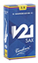
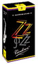

バンドーレン・サクソフォン用マウスピース
バンドーレン・マウスピース
プロファイル・シリーズ
ビークの角度がよりシェイプされたことにより、最適な姿勢、快適な操作性を得やすくなりました。
より快適な吹き心地。フレキシブルな演奏が可能となり、多くの奏者に対応可能なモデルとして設計された新世代マウスピース。
新世代のフェイシングによって生み出される審美的なサウンドを体感頂けます。
リードはトラディショナル、V.12、V21との使用が特にお勧めです。
| Profile | TIP OPENING 1/100 MM | FACING LENGTH | RECOMMENDED REED STRENGTHS | COMMENTS | ||||||||
|---|---|---|---|---|---|---|---|---|---|---|---|---|
|  |  | |||||||||||
Soprano |
SP3 | SM903 | 111 | S |
2 1/2 → 3 1/2 |
2 1/2 → 3 1/2 |
2,5 → 3,5 | 3 → 4 | 3 → 4 | 3 → 3 1/2 | 3 → 4 | 全音域で華やかでスムーズな演奏ができ、あらゆるダイナミクスレンジでの安定した音程が得られます。 |
Alto |
AP3 | SM913 | 158 | ML |
2 1/2 → 3 1/2 |
2 1/2 → 3 1/2 |
2,5 → 3,5 | 3 → 4 | 3 → 4 | 3 → 3 1/2 | 3 → 4 | 全音域において意識しなくても自然に息が入るため、柔軟な演奏ができ、多彩な音色をもたらしてくれます。 |
V5シリーズ
V5シリーズの特徴は、チェンバーが伝統的な丸い形になっていることです。
これらのマウスピースは、クラシックからジャズまで非常に幅広いジャンルの演奏家の方々に使用できるよう、幅広いモデルがあります。
| V5 | TIP OPENING 1/100 MM | FACING LENGTH | RECOMMENDED REED STRENGTHS | COMMENTS | ||||||||
|---|---|---|---|---|---|---|---|---|---|---|---|---|
Soprano |
S27 | SM404 | 111 | M | 3 → 4 |
2 1/2 → 3 1/2 |
2,5 → 3,5 | 3 1/2 → 4 | 3 1/2 → 4 | 3 1/2 → 4 | 3 1/2 → 4 | 吹きやすく、響きが均一で、美しく丸い音がします。 |
| S15 | SM401 | 123 | S | 3 → 4 |
2 1/2 → 3 1/2 |
2,5 → 3,5 | 3 1/2 → 4 | 3 1/2 → 4 | 3 1/2 → 4 | 3 1/2 → 4 | ソプラノ用マウスピースのスタンダードです。 | |
| S25∗ | SM402 | 153 | S |
2 1/2 → 3 1/2 |
2 1/2 → 3 |
2,5 → 3 | 3 → 4 | 3 → 4 | 3 → 3 1/2 | 3 → 4 | S15よりティップ・オープニングが広く、音域による変化が少なく、クラシックにもジャズにも向いています。 | |
Alto |
A17 | SM418 | 152 | S | 3 → 4 | 3 → 3 1/2 | 3 → 3,5 | 3 1/2 → 4 | 3 1/2 → 4 | 3 1/2 → 4 | 3 1/2 → 4 | すべての音域での均一性を保つと同時に、よく響き、吹きやすく、そして音が豊かです。 |
| A28 | SM419 | 163+ | MS | 2 1/2 → 3 | 2 1/2 → 3 | 2,5 → 3 |
2 1/2 → 3 1/2 |
3 → 3 1/2 | 2 1/2 → 3 | 3 → 3 1/2 | アルト用V5シリーズの代表機種。豊かな響きで、色彩感があり輝かしい音と幅広いダイナミックレンジをもたらしてくれます。 | |
| A27 | SM414 | 165 | MS |
2 1/2 → 3 1/2 |
2 1/2 → 3 | 2,5 → 3 | 3 → 4 | 3 → 4 | 3 → 3 1/2 | 3 → 4 | クラシック用のマウスピースです。すべての音域で理想的な均一性が得られます。 | |
| A15 | SM411 | 176 | ML | 3 → 4 | 3 → 3 1/2 | 3 → 3,5 | 3 1/2 → 4 | 3 1/2 → 4 | 3 1/2 → 4 | 3 1/2 → 4 | 非常に息が入りやすいです。 | |
| A25 | SM413 | 186 | ML |
2 1/2 → 3 1/2 |
2 1/2 → 3 | 2,5 → 3 | 3 → 4 | 3 → 4 | 3 → 3 1/2 | 3 → 4 | A15と同様でコンパクトに設計されていますが、ティップ・オープニングはわずかに広めです。 | |
| A20 | SM412 | 186 | ML | 2 1/2 → 3 | 2 1/2 → 3 | 2,5 → 3 |
2 1/2 → 3 1/2 |
3 → 3 1/2 | 2 1/2 → 3 | 3 → 3 1/2 | コンパクトにまとまるように設計され、芯のある音になりました。 | |
Tenor |
T15 | SM421 | 176 | MS | 3 → 4 | 3 → 3 1/2 | 3 → 3,5 | 3 1/2 → 4 | 3 1/2 → 4 | 3 1/2 → 4 | 3 1/2 → 4 | 息がとても入りやすく、アーティキュレーションも容易です。 |
| T27 | SM425 | 177 | MS | 3 → 4 |
2 1/2 → 3 1/2 |
2,5 → 3,5 | 3 1/2 → 4 | 3 1/2 → 4 | 3 1/2 → 4 | 3 1/2 → 4 | 吹きやすいマウスピースで、高音域のハーモニクスの正確さは特にすぐれています | |
| T25 | SM423 | 204 | M |
2 1/2 → 3 1/2 |
2 1/2 → 3 | 2,5 → 3 | 3 → 4 | 3 → 4 | 3 → 3 1/2 | 3 → 4 | T15と同様のコンセプトで設計されていますが、ティップ・オープニングはわずかに広めです。 | |
| T20 | SM422 | 204 | M | 2 → 3 | 2 1/2 → 3 | 2,5 → 3 |
2 1/2 → 3 1/2 |
2 1/2 → 3 1/2 |
2 1/2 → 3 1/2 |
2 1/2 → 3 1/2 |
最高の音質で、コンパクトにまとまり芯のある音です。 | |
| T35 | SM424 | 230 | M | 2 → 3 | 2 1/2 → 3 | 2,5 → 3 |
2 1/2 → 3 1/2 |
2 1/2 → 3 1/2 |
2 1/2 → 3 1/2 |
2 1/2 → 3 1/2 |
あらゆるジャンルに向いている、ティップ・オープニングが大きめなマウスピースです。 | |
Baritone |
B25 | SM431 | 185 | S | 3 → 4 | 3 1/2 → 4 | 3 1/2 → 4 | 3 → 4 | 3 1/2 → 4 | 音が豊かで、息が入りやすいです。 | ||
| B27 | SM435 | 196 | S | 3 → 4 | 3 1/2 → 4 | 3 1/2 → 4 | 3 → 4 | 3 1/2 → 4 | 全音域で非常に音が均一です。 | |||
| B35 | SM432 | 210 | S | 2 → 3 |
2 1/2 → 3 1/2 |
2 1/2 → 3 1/2 |
2 → 3 1/2 |
2 1/2 → 3 1/2 |
クラシック用のティップ・オープニングが大きめのマウスピースで、どんな要望にも応えてくれます。 | |||
| V5 JAZZ | TIP OPENING 1/100 MM | FACING LENGTH | RECOMMENDED REED STRENGTHS | COMMENTS | ||||||||
|---|---|---|---|---|---|---|---|---|---|---|---|---|
Soprano |
S35 | SM403 | 182 | ML | 2 → 3 | 2 1/2 | 2,5 |
2 1/2 → 3 1/2 |
2 1/2 → 3 1/2 |
2 1/2 → 3 1/2 |
2 1/2 → 3 1/2 |
ジャズ用のマウスピースで、幅広く密度の濃い音がします。 |
Alto |
A35∗ | SM415 | 206 | ML | 2 → 3 | 2 1/2 | 2,5 |
2 1/2 → 3 1/2 |
2 1/2 → 3 1/2 |
2 1/2 → 3 |
2 1/2 → 3 1/2 |
ティップ・オープニングが大きく、ジャズでもクラシックでも、どんなジャンルの音楽にも向いています。 |
| A45 | SM416 | 220 | ML | 2 → 3 | 2 1/2 | 2,5 |
2 1/2 → 3 1/2 |
2 1/2 → 3 1/2 |
2 1/2 → 3 |
2 1/2 → 3 1/2 |
あたたかく、ベルベットのような音です。 | |
| A55 | SM417 | 247 | L | 2 → 3 | 2 1/2 | 2,5 |
2 1/2 → 3 1/2 |
2 1/2 → 3 1/2 |
2 1/2 → 3 |
2 1/2 → 3 1/2 |
深くて丸い音がするように設計されたV5シリーズのなかで、もっともティップ・オープニングの大きいマウスピースです。 | |
Baritone |
B75 | SM433 | 275 | M | 2 → 3 |
2 1/2 → 3 1/2 |
2 1/2 → 3 1/2 |
2 → 3 |
2 1/2 → 3 1/2 |
よく響き、輝かしく、力強い音がします。 | ||
| B95 | SM434 | 310 | L | 2 | 2 1/2 | 2 1/2 | 2 → 2 1/2 | 2 → 2 1/2 | バリトンV5シリーズのジャズ用マウスピースです。 | |||
∗ = クラシックでもジャズでもこなせるタイプのマウスピースです。
ソプラニーノおよびバス・サクソフォン用のマウスピースは受注生産となっております。
| Mouthpiece only | Mouthpiece with ligature and cap | |
|---|---|---|
| Sopranino | － | SM550K |
| Bass | SM560 | － |
オプティマム・シリーズ
このシリーズは外形（特にピーク）とサウンドの両面で研究を重ねた成果であり、現代のサクソフォン奏者のニーズを満たしてくれます。
| CODE | TIP OPENING 1/100 MM | FACING LENGTH | RECOMMENDED REED STRENGTHS | COMMENTS | ||||||||
|---|---|---|---|---|---|---|---|---|---|---|---|---|
Soprano |
SL3 | SM701 | 114 | ML | 3 → 4 | 3 → 3 1/2 | 3 → 3,5 | 3 1/2 → 4 | 3 1/2 → 4 | 3 1/2 → 4 | 3 1/2 → 4 | 非常に息が入りやすく、どんな音楽にも向いていて、あらゆるニーズに応えてくれます。 |
| SL4 | SM702 | 123 | S | 3 → 4 |
2 1/2 → 3 1/2 |
2,5 → 3,5 | 3 1/2 → 4 | 3 1/2 → 4 | 3 1/2 → 4 | 3 1/2 → 4 | SL3よりわずかにティップ・オープニングが大きく、発売されるとすぐにサクソフォン奏者のスタンダードになりました｡ | |
| SL5 | SM703 | 125 | S | 2 1/2 → 3 | 2 1/2 → 3 | 2,5 → 3 | 2 1/2 → 3 | 2 1/2 → 3 | 2 1/2 → 3 | 2 1/2 → 3 | このマウスピースは非常に丸い音がするのが特徴です。 | |
Alto |
AL3 | SM711 | 152 | ML |
2 1/2 → 3 1/2 |
2 1/2 → 3 1/2 |
2,5 → 3,5 | 3 → 4 | 3 → 4 | 3 → 3 1/2 | 3 → 4 | 音がとてもまろやかな、極め付きのクラシック用マウスピースです。 |
| AL4 | SM712 | 163+ | MS | 2 1/2 → 3 | 2 1/2 → 3 | 2,5 → 3 | 3 → 4 | 3 → 4 | 3 → 3 1/2 | 3 → 4 | AL3よりわずかにティップ・オープニングが大きく、オプティマム･シリーズ特有の美しい響きがします。 | |
| AL5 | SM713 | 168 | ML | 2 1/2 → 3 | 2 1/2 → 3 | 2,5 → 3 |
2 1/2 → 3 1/2 |
3 → 3 1/2 | 2 1/2 → 3 | 3 → 3 1/2 | AL3と同様の音質ですが、オープニングはわずかに広めです。3番のリードが最適です。 | |
Tenor |
TL3 | SM721 | 176 | MS |
2 1/2 → 3 1/2 |
2 1/2 → 3 1/2 |
2,5 → 3,5 | 3 → 4 | 3 → 4 | 3 → 3 1/2 | 3 → 4 | まろやかな深い音で、正確にコントロールできます。 |
| TL4 | SM722 | 195 | M |
2 1/2 → 3 1/2 |
2 1/2 → 3 | 2,5 → 3 | 3 → 4 | 3 → 4 | 3 → 3 1/2 | 3 → 4 | TL3よりわずかにティップ・オープニングが大きく、より豊かな音がします。 | |
| TL5 | SM723 | 205 | M | 2 1/2 → 3 | 2 1/2 → 3 | 2,5 → 3 | 2 1/2 → 3 | 2 1/2 → 3 | 2 1/2 → 3 | 2 1/2 → 3 | TL3とT20を融合させたマウスピースで、豊かであたたかい音です。 | |
Baritone |
BL3 | SM731 | 185 | S |
2 1/2 → 3 1/2 |
3 → 4 | 3 → 4 |
2 1/2 → 3 1/2 |
2 1/2 → 3 1/2 |
バリトン用のスタンダードなマウスピースです。 | ||
| BL4∗ | SM732 | 230 | M | 2 → 3 |
2 1/2 → 3 1/2 |
2 1/2 → 3 1/2 |
2 → 3 |
2 1/2 → 3 1/2 |
ジャンルを問わず、クラシックにもジャズにも向いています。 | |||
| BL5 | SM733 | 235 | L | 2 1/2 → 3 | 2 1/2 → 3 | 2 1/2 → 3 | 2 → 3 | 2 1/2 → 3 | BL3にインスパイアされた昔ながらのオープニングのマウスピースで、大きくて丸い音がします。 | |||
∗ = クラシックでもジャズでもこなせるタイプのマウスピースです。
V16 シリーズ

JAVA、V16、そしてZZのリードにマッチするマウスピースです。

JAVA シリーズ

JAVAエボナイト・マウスピースはジャズやソウル、ファンクに向いています。
吹き心地のよいエボナイトの感触で、メタル・マウスピースと同様のサウンドを得られます。
| JAVA | TIP OPENING 1/100 MM | FACING LENGTH | RECOMMENDED REED STRENGTHS | COMMENTS | ||||||||
|---|---|---|---|---|---|---|---|---|---|---|---|---|
Alto |
A35 | SM501B | 206 | ML | 2 → 3 | 2 1/2 | 2,5 |
2 1/2 → 3 1/2 |
2 1/2 → 3 1/2 |
2 1/2 → 3 |
2 1/2 → 3 1/2 |
豊かで色彩感のあるサウンドの、ジャズ用マウスピースです。 |
| A45 | SM502B | 220 | ML | 2 → 3 | 2 1/2 | 2,5 |
2 1/2 → 3 1/2 |
2 1/2 → 3 1/2 |
2 1/2 → 3 |
2 1/2 → 3 1/2 |
V16シリーズのA8とA9の中間のティップ・オープニングで、JAVAならではのサウンドです。 | |
| A55 | SM503B | 247 | L | 2 → 3 | 2 1/2 | 2,5 |
2 1/2 → 3 1/2 |
2 1/2 → 3 1/2 |
2 1/2 → 3 |
2 1/2 → 3 1/2 |
このタイプのスタンダードです。 | |
| A75 | SM504B | 260 | L | 1 1/2 → 2 | 2 → 2 1/2 | 2 → 2 1/2 |
1 1/2 → 2 1/2 |
2 → 2 1/2 | ティップ・オープニングが広く、軟らかいリードを使うように設計されています。 | |||
Tenor |
T45 | SM511B | 235 | M | 2 → 3 | 2 1/2 | 2,5 |
2 1/2 → 3 1/2 |
2 1/2 → 3 1/2 |
2 1/2 → 3 1/2 |
2 1/2 → 3 1/2 |
ジャズとクラシックに同じように使えるマウスピースです。 |
| T55 | SM512B | 250 | L | 2 → 2 1/2 | 2 1/2 | 2,5 | 2 1/2 → 3 | 2 1/2 → 3 | 2 → 3 | 2 1/2 → 3 | V16シリーズのT6と同じティップ・オープニングの、吹き心地のよいマウスピースです。 | |
| T75 | SM513B | 265 | ML | 2 → 2 1/2 | 2 1/2 | 2,5 | 2 1/2 → 3 | 2 1/2 → 3 | 2 → 3 | 2 1/2 → 3 | 中庸のティップ・オープニングで、JAVAのテナー用ではもっともポピュラーです。 | |
| T95 | SM514B | 295 | L |
1 1/2 → 2 1/2 |
2 → 2 1/2 | 2 → 3 |
1 1/2 → 2 1/2 |
2 → 3 | 濃密で、豊かな、芯のある音です。 | |||
ジャンボJAVA シリーズ
個性豊かなマウスピースです。
チェンバーは小さめで、バッフルは非常に高く、ラージボアです。
メタル・マウスピースに匹敵する音がします。
| JUMBO JAVA | TIP OPENING 1/100 MM | FACING LENGTH | RECOMMENDED REED STRENGTHS | COMMENTS | ||||||||
|---|---|---|---|---|---|---|---|---|---|---|---|---|
Alto |
A35 | SM601B | 206 | ML | 2 → 3 | 2 1/2 | 2,5 |
2 1/2 → 3 1/2 |
2 1/2 → 3 1/2 |
2 1/2 → 3 |
2 1/2 → 3 1/2 |
明るく鋭い音です。 |
| A45 | SM602B | 220 | ML | 2 → 3 | 2 1/2 | 2,5 |
2 1/2 → 3 1/2 |
2 1/2 → 3 1/2 |
2 1/2 → 3 |
2 1/2 → 3 1/2 |
サルサやロックなど現代の音楽に向いているスタンダードです。 | |
| A55 | SM603B | 247 | L | 2 → 3 | 2 1/2 | 2,5 |
2 1/2 → 3 1/2 |
2 1/2 → 3 1/2 |
2 1/2 → 3 |
2 1/2 → 3 1/2 |
音の伸びと快適な吹き心地のバランスがとれている、このタイプのスタンダードです。 | |
| A75 | SM604B | 260 | L | 1 1/2 → 2 | 2 → 2 1/2 | 2 → 2 1/2 |
1 1/2 → 2 1/2 |
2 → 2 1/2 | 大きく輝かしい音がする、ティップ・オープニングの大きめなマウスピースです。 | |||
Tenor |
T45 | SM611B | 235 | M | 2 → 3 | 2 1/2 | 2,5 |
2 1/2 → 3 1/2 |
2 1/2 → 3 1/2 |
2 1/2 → 3 1/2 |
2 1/2 → 3 1/2 |
軟らかいリードを使って吹く、非常にティップ・オープニングが大きいマウスピースです。 |
| T55 | SM612B | 250 | L | 2 → 2 1/2 | 2 1/2 | 2,5 | 2 1/2 → 3 | 2 1/2 → 3 | 2 → 3 | 2 1/2 → 3 | パワーと輝きに満ちた音が特徴です。 | |
| T75 | SM613B | 265 | ML | 2 → 2 1/2 | 2 1/2 | 2,5 | 2 1/2 → 3 | 2 1/2 → 3 | 2 → 3 | 2 1/2 → 3 | ダイナミックで柔軟性のある、さまざまなジャンルで使えるマウスピースです。 | |
| T95 | SM614B | 295 | L |
1 1/2 → 2 1/2 |
2 → 2 1/2 | 2 → 3 |
1 1/2 → 2 1/2 |
2 → 3 | スウィングやジャズ、R&Bに向いている非常にポピュラーなマウスピースです。 | |||
ブルージャンボJAVA シリーズ
80年代に登場し、現在コアなファンに人気のマウスピースが限定で現代に復刻！
| BLUE JUMBO JAVA | TIP OPENING 1/100 MM | FACING LENGTH | RECOMMENDED REED STRENGTHS | COMMENTS | |||||||
|---|---|---|---|---|---|---|---|---|---|---|---|
Alto |
SM602 | 220 | ML | 2 → 3 | 2 1/2 | 2,5 |
2 1/2 → 3 1/2 |
2 1/2 → 3 1/2 |
2,5 → 3 |
2 1/2 → 3 1/2 |
スムースジャズからロック、ファンクに至るまであらゆるジャンルにフィットする、フレキシブルで色彩に富んだマウスピースです。 |